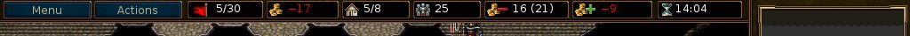

Inhaltsverzeichnis
- Einleitung
- 1. Grundlagen
- 2. Spielen
- 3. Strategien und Tipps
- 3.1. Grundsätzliche Strategien
- 3.1.1. Verschwendet keine Einheiten
- 3.1.2. Außerhalb der Reichweite des Gegners
- 3.1.3. Schirmt Euch mit Eurer Kontrollzone (KonZ) ab
- 3.1.4. Haltet eine Verteidigungslinie aufrecht
- 3.1.5. Tauscht Eure Truppen aus
- 3.1.6. Nutzt das Gelände
- 3.1.7. Angreifen und die Auswahl Eurer Ziele
- 3.1.8. Tageszeit
- 3.1.9. Erfahrung
- 3.2. Den Spaß am Spiel maximieren
Tabellenverzeichnis
- 2.1. Allgemeine Steuerung und Tastenkürzel
- 2.2. Tastenkürzel für Einheiten- und Spielrunden
- 2.3. Tastenkürzel für das Reißbrett
- 2.4. Tastenkürzel für Mehrspieler-Modus
- 2.5. Verschiedene Tastenkürzel
- 2.6. Verschiedene Tastenkürzel
- 2.7. Steuerung und Tastenkürzel für Pandora
- 2.8. Tageszeit und Schaden
- 2.9. Erfahrungsboni für besiegte oder bekämpfte Gegner unterschiedlicher Stufe
- 2.10. Sphären
The Battle for Wesnoth ist ein rundenbasiertes Strategiespiel in einem Fantasyszenario.
Erschafft eine große Armee und führt Eure Soldaten auf ihrem Weg vom Rekrut hin zum Veteran. Beruft Eure besten Truppen in späteren Schlachten ein, um so eine Armee aufzubauen, der niemand gewachsen ist! Wählt Einheiten aus einer großen Anzahl an Spezialisten und erschafft so eine handverlesene Truppe, stark genug, um auf jedwedem Gelände dem Gegner zu widerstehen.
Wesnoth kennt viele verschiedene Geschichten, die gespielt werden wollen. Ihr könnt Orks, Untote und Banditen auf ihren Zügen durch das Königreich von Wesnoth bekämpfen; streitet an der Seite von Drachen in luftigen Höhen, mit Elfen in den grünen Reichen der Aethenwälder, Zwergen in den tiefen Hallen von Knalga oder sogar mit dem Meervolk in der Perlenbucht. Ihr könnt kämpfen, um den Thron von Wesnoth wiederzuerlangen, Eure gefürchtete Macht über die Untoten verwenden, um die Lande der Sterblichen zu unterjochen oder sogar Euren orkischen Stamm zum Sieg gegen die Menschen führen, die Euch Eures Landes beraubt haben.
Ihr werdet aus über zweihundert Einheiten-Arten (Infanterie, Kavallerie, Bogenschützen und Magier sind nur der Anfang) auswählen können und Begebenheiten von Kleineinheiten-Hinterhalten bis zu Zusammenstößen von gewaltigen Armeen auskämpfen können. Zudem könnt Ihr Freunde oder Fremde in epischen Mehrspielerschlachten bekriegen.
Battle for Wesnoth ist OpenSource-Software und eine lebendige Gemeinschaft von Freiwilligen arbeiten zusammen, um das Spiel zu verbessern. Ihr könnt Eure eigenen Einheiten erstellen, Eure eigenen Szenarien schreiben und sogar vollständige Kampagnen skripten. Nutzerbetreuter Inhalt ist auf einem Erweiterungsserver verfügbar und das Beste davon ist in die offiziellen Veröffentlichungen von Battle for Wesnoth eingepflegt.
Der bekannte Teil des großen Kontinents, auf dem Wesnoth liegt, ist in drei Bereiche unterteilt: Die Nordlande, hauptsächlich bewohnt von Gesetzlosen, das Königreich von Wesnoth und sein gelegentliches Fürstentum, Elensefar sowie das Reich der Elfen in den Aethenwäldern und dahinter im Südosten.
Das Königreich von Wesnoth liegt im Herzen des Landes. Seine natürlichen Grenzen sind der Große Fluss im Norden, die Dulatus-Hügel im Osten und Süden, der Rand der Aethenwälder im Südwesten und der Ozean im Westen. Elensefar, eine ehemalige Provinz von Wesnoth, wird vom großen Fluss im Norden, einer kaum ausgehandelten Grenze mit Wesnoth im Osten, der Perlenbucht im Süden und dem Ozean im Westen begrenzt.
Die Nordlande sind die wilde Gegend nördlich des großen Flusses. Verschiedene Gruppierungen von Orks, Zwergen, Barbaren und Elfen bevölkern die Gegend. Im Norden und Osten liegt der Wald von Lintanir, wo sich das große Königreich der Nord-Elfen um seine eigenen mysteriösen Geschäfte kümmert.
Quer über das Land sind Dörfer verstreut, in denen Ihr Eure Truppen heilen und die Einnahmen sammeln könnt, die Ihr zur Unterstützung Eurer Armee benötigt. Ihr werdet auch Berge und Flüsse überwinden, Wälder, Hügel und Tundra überbrücken und offene Wiesen überqueren müssen. In jeder dieser Landschaften haben sich verschiedene Kreaturen heimisch gemacht und können sich dort leichter fortbewegen sowie besser kämpfen.
In der Welt von Wesnoth leben Menschen, Elfen, Zwerge, Orks, Draken, Saurianer, das Meervolk, Naga und viele noch seltsamere und wunderlichere Rassen. In verfluchten Landen wandeln Untote, Geister und Spuke; Monster lauern in ihren Ruinen und Verliesen. Jeder davon hat sich an bestimmte Umgebungen gewöhnt. Menschen bewohnen hauptsächlich die gemäßigten Wiesen. In den Hügeln, Bergen und unterirdischen Höhlen sind hauptsächlich Orks und Zwerge zu Hause. Zwischen den hohen Baumstämmen der Wälder leben zumeist die Elfen. In den Ozeanen und Flüssen liegt das nasse Reich des Meervolkes und der Naga.
Im Spiel kommt es oft vor, dass sich zwei oder mehrere Rassen unter einem Banner vereinigen: Beispielsweise machen Trolle oft gemeinsame Sache mit den Orks wohingegen Menschen, Elfen oder Zwerge als Bündnispartner auswählen. Andere Fraktionen stellen Unterteilungen innerhalb der menschlichen Gesellschaft dar – zum Beispiel Loyalisten gegen Geächtete. In den meisten Kampagnen befehligt Ihr die Soldaten einer einzigen Fraktion. Aber einige davon bilden Allianzen mit anderen, so dass Ihr mehr als einer Solchen gegenüberstehen könnt.
Wenn Wesnoth gestartet wird, zeigt es ein Hintergrundbild sowie eine Spalte an Knöpfen, die das Hauptmenü genannt werden. Diese Knöpfe können nur mit der Maus bedient werden. Dem Ungeduldigen empfehlen wir, den »Sprache«-Knopf zu klicken, um Eure Sprache einzustellen; anschließend den Knopf namens »Einführung«, um die Einführung zu spielen; und dann spielt die Kampagne »Die Geschichte zweier Brüder« durch das Klicken des »Kampagnen«-Knopfs mit anschließender Auswahl aus der folgenden Liste.

- Einführung
- Die Einführung ist ein echtes aber einfaches Spiel, das einige der Grundzüge vermittelt, die Ihr im Spiel benötigen werdet. Gewinnen oder verlieren ist hier nicht wichtig. Euch soll hier vermittelt werden, wie die grundlegenden Spielelemente funktionieren. Klickt auf den »Einführung«-Knopf, um sie zu spielen. In der Einführung schlüpft Ihr in die Rolle Prinz Konrads oder Prinzessin Li’sars und lernt vom alten Magier Delfador – passt gut auf oder er verwandelt Euch in einen Molch.
- Kampagnen
- Wesnoth war ursprünglich dazu ausgelegt, Kampagnen zu spielen. Kampagnen sind eine Folge von zusammenhängenden Szenarien. Klickt auf diesen Knopf, um eine neue Kampagne zu beginnen. Ihr werdet eine Liste der auf Eurem Computer vorhandenen Kampagnen angezeigt bekommen (weitere können heruntergeladen werden, falls Ihr es wünscht). Wählt Eure Kampagne aus und klickt auf »Okay«, um sie zu starten oder auf »Abbrechen«, um zurückzukehren. Jede Kampagne besitzt eine Einstufung: Leicht, Mittel (Normal) oder Schwierig. Wir empfehlen Mittel, da diese Einstufung herausfordernd ist, aber nicht zu schwierig. Ihr könnt die Einstufung nicht während einer Kampagne wechseln, der Leitfaden zur Grundsätzlichen Strategie wird Euch sicherlich helfen. Nachdem Ihr die Einstufung gewählt habt, beginnt das erste Szenario der Kampagne.
- Mehrspieler
- Klickt diesen Knopf, um einzelne Szenarien gegen einen oder mehrere Gegner zu bestreiten. Ihr könnt das Spiel im Internet spielen oder auch an Eurem Rechner, gegen den Computer oder menschliche Gegner. Wenn Ihr diesen Knopf auswählt erscheint ein Dialog, der es Euch erlaubt zu wählen, wie Ihr das Szenario spielen wollt. Um mehr darüber zu erfahren, lest Szenarien.
- Laden
- Wählt diesen Knopf, um ein zuvor gespeichertes Spiel zu laden. Ihr werdet mit einem Dialog konfrontiert, der die Spielstände anzeigt. Wählt das gewünschte Spiel aus und klickt auf »Okay«, um es zu laden und fortzusetzen oder »Abbrechen«, um zum Hauptmenü zurückzukehren. Falls Ihr einen Spielverlauf wählen wollt, solltet Ihr die »Spielverlauf«-Box ankreuzen. Das geladene Spiel wird dann alle Züge von Anfang an abspielen, während Ihr zuseht.
- Erweiterungen
- Mit diesem Knopf könnt Ihr Euch mit einem Kampagnenserver verbinden, der viel an von normalen Benutzern erstellten Inhalt bereithält. Unter den Dingen, die hier verfügbar sind, gibt es viele Kampagnen, Mehrspielerepochen (die Randbedingungen für Mehrspielerpartien definieren) und -karten. Über den »Erweiterungen entfernen«-Knopf könnt Ihr sie wieder löschen, falls Ihr sie nicht mehr benötigt.
- Karteneditor
- Dieser Knopf bringt Euch in den Karteneditor, in dem Ihr eigene Karten für Mehrspieler-Partien oder um Eure eigenen Kampagnen darauf aufzubauen erstellen könnt.
- Sprache
- Hier könnt Ihr Eure Sprache einstellen und mittels »Okay« bestätigen oder aber über »Abbrechen« die aktuelle Sprache beibehalten. Wenn Wesnoth das erste Mal gestartet wird, wird es auf Englisch oder Eure Systemsprache gesetzt, falls diese herauszufinden ist. Wenn Ihr sie jedoch ändert, wird Wesnoth von dann an in dieser Sprache gestartet.
- Einstellungen
- Um die Einstellungen zu ändern, klickt hier.
- Mitwirkende
- Dieser Knopf zeigt Euch eine Liste derjenigen, die zu Wesnoth beigetragen haben. Ihr werdet sie auch häufig auf irc.freenode.org:6667 in #wesnoth in Echtzeit antreffen können.
- Beenden
- Mit diesem Knopf könnt Ihr Wesnoth beenden.
- Hilfe
- Falls Ihr auf diesen Knopf klickt, öffnet sich das in das Spiel integrierte Hilfesystem. Hier werdet Ihr Informationen über Einheiten und alle anderen, das Spiel betreffenden Themen finden. Die meisten dieser Themen werden in diesem Handbuch behandelt.
- Nächster
- Klickt hierauf, um den nächsten Tipp aus dem »Buch von Wesnoth« zu erhalten.
- Zurück
- Klickt hierauf, um den vorangegangenen Tipp aus dem »Buch von Wesnoth« zu erhalten.
An sich gibt es zwei verschiedene Spielmodi in Battle for Wesnoth:
- Spielt eine Reihe von aufeinander folgenden Szenarien gegen den Computer. Dies wird auch als »Kampagne« bezeichnet.
- Spielt ein einzelnes Szenario gegen den Computer oder menschliche Widersacher.
Kampagnen sind Abfolgen von Kämpfen mit einer zusammenhängenden Geschichte. Typische Kampagnen haben zwischen 10 und 20 Szenarien. Der große Vorteil von Kampagnen ist es, seine Armee zu entwickeln. Wenn man ein Szenario abschließt, werden die am Ende überlebenden Einheiten gespeichert, um sie im nächsten Szenario weiterverwenden zu können. Falls man eine Einheit in einem Szenario überhaupt nicht verwendet, wird diese in das Nächste mitgenommen. Man verliert also keine Einheiten, die nicht eingesetzt werden.
Eine Kampagne ist die übliche Spielart, für die Wesnoth gedacht ist; vermutlich die erfreulichste, und ist der empfohlene Weg für neue Spieler, das Spiel zu lernen.
Um ein einzelnes Szenario abzuschließen bedarf es zwischen 30 Minuten und 2 Stunden Spielzeit. Es ist die schnellste Art zu spielen, aber die Einheiten werden nicht gespeichert und man kann keine Einheiten aus Kampagnen verwenden. Szenarien können gegen den Computer oder gegen andere Spieler – entweder über das Internet oder an Ihrem Rechner – gespielt werden. Szenarien werden über den »Mehrspieler«-Knopf aus dem Hauptmenü aufgerufen.
In der Regel werden Mehrspielerpartien gegen andere Spieler über das Internet gespielt (Ihr könnt es auch in Eurem LAN durchführen, wenn Ihr darüber verfügt). All diese Spiele werden über einen Wesnoth-Mehrspieler-Server koordiniert. Mehrspielerpartien können von einer Stunde bis zu zehn Stunden dauern, abhängig von der Anzahl der Spieler sowie der Größe der Karte. Die durchschnittliche Zeit liegt zwischen 3 und 7 Stunden. Spiele können so oft gespeichert und wieder geladen werden wie man möchte. Daher ist es durchaus möglich, dass einige Spiele eine oder zwei Wochen dauern, selbst wenn die tatsächliche Spielzeit nur wenige Stunden beträgt. Ihr könnt im Mehrspielermodus keine Einheiten von einem Szenario in das nächste übernehmen, daher ist es nur innerhalb des Szenarios möglich, die Stärke Eurer Armee auszubauen.
Es gibt mehrere Wahlmöglichkeiten, die Euch geboten werden, wenn der »Mehrspieler«-Knopf benutzt wird:

Dies ist Ihr Name auf dem Mehrspieler Server. Wenn Ihr einen Account im Wesnoth Forum habt, so könnt Ihr den Nutzernamen und das zugehörige Passwort benutzen, um mit diesen Daten den Server zu betreten. Wählt Ihr einen bereits registrierten Namen, so wird bei dem Versuch, dem Server beizutreten ein Fenster mit einem Eingabefeld erscheinen, in dem Ihr das korrekte Passwort angeben müsst. Einen bereits registrierten Namen könnt Ihr nicht ohne das zugehörige Passwort wählen.
Diese Auswahl verbindet Euch direkt mit dem offiziellem Server. Ihr werdet Euch kurze Zeit später in der Mehrspielerlobby wiederfinden, in der Ihr Eure Spiele nach Euren Wünschen erstellen könnt, wo bereits viele Spiele eröffnet sind und wohl sogar einige Spieler bereits darauf warten, einem neuen Wettkampf beizutreten.
Diese Auswahl öffnet eine Dialog-Box, in der Ihr die Adresse des Rechners eingeben könnt, zu dem Ihr Euch verbinden wollt. Es findet sich hier auch ein Knopf »Liste Anzeigen«, mit dem Ihr Euch eine Liste der offiziellen Server anzeigen lassen könnt, die Ihr zum Ausweichen verwenden könnt, falls der Hauptserver zur Zeit nicht verfügbar ist.
Eine recht vollständige Liste von offiziellen und von Benutzern aufgesetzten Servern ist auf folgender Webseite zu finden: Mehrspielerserver.
Ihr könnt über diesen Menüpunkt auch Server erreichen, die von anderen Spielern gestartet wurden. Falls Ihr also einen Server in Eurem lokalen Netzwerk habt, gebt lediglich die Adresse und die Portnummer (Standard: 15000) ein. Falls Ihr Euch zum Beispiel mit einem Server verbinden wollt, der auf dem Rechner mit der Adresse 192.168.0.10 mit dem Standardport läuft, würdet Ihr in diesem Dialog folgendes eingeben: 192.168.0.10:15000
Um eine Mehrspielerpartie zu beginnen, ohne einen externen Mehrspieler-Server zu verwenden, müsst Ihr den Server selbst starten, der üblicherweise wesnothd heißt. Das Programm wird automatisch im Hintergrund gestartet, wenn diese Option gewählt wird; und wieder beendet, wenn alle Spieler den Server verlassen haben. Andere Spieler müssen sich zu Eurem Port 15000 über TCP verbinden können, um auf Eurem Server spielen zu können. Falls Ihr Euch hinter einer Firewall befindet, solltet Ihr vermutlich Eure Firewall-Einstellungen anpassen, um eingehende Verbindungen auf Port 15000 zuzulassen und Eurer Firewall mitteilen, diesen Netzverkehr an die Maschine weiterzuleiten, auf der der Server ausgeführt wird. Für Spiele auf einem öffentlichen Server oder bei jemand anderem sollte es nicht notwendig sein, Eure Firewall-Einstellungen zu ändern.
Damit startet Ihr ein Spiel, das nur auf Eurem Computer läuft. Ihr könnt es als Hotseat-Spiel (»Heißer Stuhl«) spielen, in dem jeder am selben Rechner spielt und die Züge im heißen Stuhl durchführt. Hotseat-Spiele benötigen die selbe Spielzeit wie Spiele über das Internet. Ihr könnt aber auch nur ein Spiel gegen KI-Gegner statt menschliche Spieler spielen. Dies kann eine gute Art sein, sich mit den verschiedenen Karten vertraut zu machen, die in Mehrspielerpartien verwendet werden, bevor Ihr gegen menschliche Gegner antretet. Es kann auch dazu verwendet werden, die Fähigkeiten von Einheiten der verschiedensten Fraktionen in diesen Spielen auszutesten. Natürlich könnt Ihr auch beides in einem Spiel mischen, also gemeinsam mit einem Freund in einem Spiel gegen einen Computergegner anzutreten.

Unabhängig davon ob Ihr ein Szenario oder eine Kampagne spielt, die grundsätzliche Anordnung des Spielbildschirmes ist die gleiche. Den Großteil des Bildes umfasst eine Karte, die die gesamten Handlungen anzeigt, die im Spiel stattfinden. Um die Karte herum gibt es verschiedene Elemente, die nützliche Informationen über das Spiel bieten und in folgendem genauer beschrieben werden.

Am oberen Rand des Schirmes finden sich von links nach rechts folgende Teile:
- Menü-Knopf
- Aktionen-Knopf
- Runden-Anzeiger (aktuelle Runde/maximale Anzahl von Runden)
- Eigenes Gold
- Dörfer (Eure Dörfer/Gesamtanzahl an Dörfern)
- Anzahl der eigenen Einheiten
- Unterhaltskosten
- Eigenes Einkommen
- Aktuelle Zeit oder restliche Zeit (in zeitbasierten Mehrspielerpartien)

Den rechten Rand hinunter von oben nach unten findet sich:
- Komplette Karte, skaliert
- Current hex position (x-coordinate, y-coordinate), defense and movement of the currently selected unit on the marked hex
- Aktueller Geländetyp des Feldes
- Anzeige der Tageszeit
- Einheitenbeschreibung der zuletzt ausgewählten Einheit
- »Zug beenden«-Knopf
Wenn Ihr ein Szenario oder eine Kampagne zum ersten Mal startet, werdet Ihr nur einige wenige Einheiten auf der Karte vorfinden. Eine dieser Einheiten wird Euer Anführer sein (erkennbar durch ein kleines, goldenes Kronensymbol). Euer Anführer befindet sich üblicherweise in einer Burg auf einem speziellen Feld, das Burgfried genannt wird. Wann auch immer sich Euer Anführer auf einem Burgfried befindet (nicht nur Euer eigener sondern auch jener eines feindlichen Schlosses, das Ihr einnehmt) und Ihr genügend Gold habt, könnt Ihr Einheiten für Eure Armee ausbilden. In späteren Szenarien könnt Ihr erfahrene Einheiten einberufen, die frühere Szenarien überlebt haben. Von nun an könnt Ihr beginnen, Eure Armee aufzubauen, um den Gegner zu bezwingen.
Als erstes werdet Ihr vermutlich Eure erste Einheit ausbilden wollen. Drückt
Strg+r (oder klickt mit der rechten Maustaste auf ein
leeres Burgfeld und wählt »Ausbilden«) und Ihr werdet eine Einheit aus einer
Liste aller Euch zur Verfügung stehenden Einheiten ausbilden können. Jeder
Rekrut wird auf ein leeres Burgfeld gestellt. Wenn Eure Burg komplett
besetzt ist, könnt Ihr niemanden mehr ausbilden, bevor sich die Einheiten
nicht wegbewegt haben. Gegnerische Anführer befinden sich ebenfalls auf
ihrem Burgfried und werden beginnen, ihre Truppen auszubilden – gebt Euch
also nicht Tagträumen hin, es gibt einen Kampf zu gewinnen.
Am Ende jedes erfolgreichen Szenarios werden alle überlebenden Truppen automatisch gespeichert. Zu Beginn des nächsten Szenarios können sie auf eine dem Rekrutieren ähnliche Weise einberufen werden. Einberufene Einheiten sind oft erfahrener als Rekruten und üblicherweise eine bessere Wahl.
Alle Spiel-Arten verwenden die selben Soldaten, auch Einheiten genannt. Jede Einheit wird durch ihre Rasse, die Stufe und die Klasse gekennzeichnet. Jede Einheit hat ihre Stärken und Schwächen, basierend auf ihren Resistenzen, dem aktuellen Gelände und der Stufe. Die kompletten Details finden sich in der Spielhilfe.
Durch das Sammeln von Kampferfahrung lernen Eure Truppen weitere Fähigkeiten und werden stärker. Sie werden auch im Kampf sterben, daher müsst Ihr weitere Einheiten ausbilden und einberufen. Aber wählt sorgfältig, da jede ihre Stärken und Schwächen hat, die ein listiger Gegner rasch ausnutzen wird.
Lest Euch die Ziele, die zu Beginn jedes Szenario eingeblendet werden, sorgfältig durch. Üblicherweise werdet Ihr den Sieg erringen, wenn Ihr die gegnerischen Anführer bezwingt und verlieren, wenn Euer eigener Anführer gestorben ist. Szenarien können jedoch auch andere Siegesbedingungen aufweisen. Beispielsweise müsst Ihr Euren Anführer zu einem bestimmten Punkt führen, Notdürftige aus ihrer misslichen Lage befreien, ein Rätsel lösen oder einer anstürmenden Heerschar für eine bestimmte Zeit Paroli bieten.
Wenn Ihr in einem Szenario den Sieg errungen habt, ändert sich die Schaltfläche Zug beenden in Szenario beenden und die Karte wird mit einem grauen Schleier überzogen. Nun könnt Ihr beispielsweise Eure Speicheroptionen ändern oder (falls Ihr Euch in einer Mehrspielerpartie befindet) Euch mit anderen Spielern unterhalten, bevor Ihr mit dem Spiel fortfahrt.
Eure Armee kämpft nicht umsonst. Ihr benötigt Gold, um Eure Einheiten auszubilden sowie ihren Sold zu bezahlen. Ihr beginnt jedes Szenario mit Gold, das Ihr aus vorhergehenden Szenarien mitgebracht habt (obwohl jedes Szenario sicher stellt, dass Ihr zumindest eine minimale Anzahl an Gold habt, falls Ihr aus den vorangegangenen Szenarien nicht genügend mitgebracht habt) und könnt weiteres Gold erhalten, indem Ihr die Missionsziele rasch erfüllt und während eines Szenarios Dörfer einnehmt. Für jedes Dorf, das Ihr kontrolliert, erhaltet Ihr zwei Goldstücke Einnahmen pro Zug. Zu Beginn eines Szenarios ist es oftmals lohnenswert, die Kontrolle über so viele Dörfer wie nur möglich zu erlangen, um genügend Truppen in die Schlacht schicken zu können. Ihr könnt Euer aktuelles Gold und die aktuellen Einnahmen am oberen Rand des Bildes sehen, wie auch im Abschnitt über den Spielbildschirm nachzulesen ist.
Am Anfang eines jeden Szenarios wird Euer Spielstand üblicherweise gesichert. Falls Ihr besiegt werdet, könnt Ihr es laden und erneut versuchen. Wenn Ihr es dann geschafft habt, werdet Ihr erneut gefragt, das nächste Szenario zu speichern und jenes zu spielen. Wenn Ihr das Spiel während eines Szenarios unterbrechen müsst, könnt Ihr Euren Zug speichern und ihn später wieder laden. Vergesst jedoch nicht, dass ein guter »Battle for Wesnoth«-Spieler nie während eines Szenarios speichern muss. Jedoch tendieren Anfänger dazu, es ziemlich häufig zu tun.
Hier handelt es sich um die Standard-Tastenkürzel. Die Tastaturbelegung kann abhängig von der verwendeten Plattform unterschiedlich sein. Zum Beispiel werden Sie häufig die Befehlstaste statt der Steuertaste verwenden müssen, wenn Sie MacOSX verwenden. Sie können die meisten Tastenkürzel im Einstellungsmenü an Ihre Vorlieben anpassen.
Tabelle 2.1. Allgemeine Steuerung und Tastenkürzel
| F1 | Hilfe zu Battle for Wesnoth |
| Pfeil-Tasten | Scrollen |
| Linksklick | Einheit auswählen, Einheit bewegen |
| Rechtsklick | Kontextmenü, Aktion abbrechen |
| Mittlere Taste bei einer Dreitastenmaus | An der Zeigerposition zentrieren |
| Escape | Spiel beenden, Menü beenden, Nachricht abbrechen |
| Strg+s | Spiel speichern |
| Strg+o | Spielstand laden |
| Strg+p | Das Einstellungsmenü aufrufen |
| Strg+q | Spiel beenden |
| Strg+f | Zwischen Vollbild-/Fenster-Modus umschalten |
| Strg+Alt+m | Spielgeräusch-Unterdrückung ein-/ausschalten |
| + | Hereinzoomen |
| - | Herauszoomen |
| 0 | Standardansicht wiederherstellen |
| Strg+e | Ellipsen ein-/ausschalten |
| Strg+g | Gitternetz ein-/ausschalten |
| Strg+a | Beschleunigten Spielmodus ein-/ausschalten |
| Umschalttaste halten | Während dem Drücken wird (temporär!) zwischen beschleunigtem und normalem Spielmodus umgeschalten |
| Strg+j | Missionsziele anzeigen |
| s | Statistiken anzeigen |
| Alt+s | Status-Tabelle anzeigen |
| Alt+u | Liste der Einheiten von Wesnoth anzeigen |
| l | Zum Anführer bewegen |
| Umschalt+s | Schleier der Finsternis jetzt aktualisieren |
Tabelle 2.2. Tastenkürzel für Einheiten- und Spielrunden
| Strg+r | Einheit ausbilden |
| Strg+Alt+r | Weitere Einheit ausbilden |
| Alt+r | Einheit einberufen |
| Strg+n | Einheit umbenennen |
| d | Die Beschreibung der aktuell gewählten Einheit anzeigen |
| t | Unterbrochenen Einheiten-Zug fortsetzen |
| u | Letzten Zug rückgängig machen (nur deterministische Aktionen können rückgängig gemacht werden) |
| r | Zug wiederherstellen |
| n | Die Einheiten durchgehen, die sich noch bewegen können |
| Umschalt+n | Die Einheiten durchgehen, die sich noch bewegen können, in umgekehrter Reihenfolge |
| Strg+v | Gegnerische Züge anzeigen (wohin sich der Gegner im nächsten Zug bewegen kann) |
| Strg+b | Zeigt mögliche gegnerische Züge an, als ob Eure Einheiten nicht auf der Karte wären |
| 1-7 | Zeigt an, wie weit die aktuell ausgewählte Einheit sich in der entsprechenden Anzahl an Zügen bewegen kann. |
| Leertaste | Zug der Einheit beenden und zur nächsten Einheit springen, die sich noch bewegen kann |
| Umschalt+Leertaste | Die aktuelle Einheit an ihrer Position behalten (ihren Zug beenden) |
| Strg+Leertaste | Zug des aktuellen Spielers beenden |
Tabelle 2.3. Tastenkürzel für das Reißbrett
| p | Planungsmodus ein-/ausschalten |
| y | Geplante Handlung durchführen |
| h | Geplante Handlung löschen |
| Bild runter | Handlung in Warteschlange nach hinten verschieben |
| Bild hoch | Handlung in Warteschlange nach vorne verschieben |
| Strg+y | Alle Handlungen durchführen |
| i | Tod vermuten |
Tabelle 2.4. Tastenkürzel für Mehrspieler-Modus
| m | Einen anderen Spieler benachrichtigen (Mehrspieler-Modus) |
| Strg+m | Alle Verbündeten benachrichtigen (Mehrspieler-Modus) |
| Alt+m | Alle benachrichtigen (Mehrspieler-Modus) |
| Alt+c | Gesprächsprotokoll anzeigen |
| Strg+x | Nachrichten löschen |
Tabelle 2.5. Verschiedene Tastenkürzel
| Strg+c | Beschriftungen entfernen |
| / | Suchen (Beschriftung oder Einheit über Namen finden) |
| Alt+l | Einem Feld eine Beschriftung hinzufügen |
| Strg+l | Teamspezifische Beschriftung erstellen |
| : | Befehlsmodus |
| F5 | Zwischenspeicher aktualisieren |
| Umschalt+c | Einheit erstellen (Debug!) |
| f | KI-Formel ausführen |
Einige Tasten auf MacOSX benötigen mehr als ein Ersetzen von Strg durch Cmd. Dies ist jene Liste:
Tabelle 2.6. Verschiedene Tastenkürzel
| Cmd+w | Spiel beenden |
| Cmd+, | Das Einstellungsmenü aufrufen |
| Strg+F5 | Zwischenspeicher aktualisieren |
| Option+Leertaste | Zug des aktuellen Spielers beenden |
Einige Tastenkürzel wurden leicht geändert, um die Steuerung, die Pandora bietet, besser auszunützen. Falls Sie Pandora verwenden, unterscheiden sich folgende Tasten von der oben angeführten Liste:
Tabelle 2.7. Steuerung und Tastenkürzel für Pandora
| D-Pad | Scrollen |
| Spieletaste A | Einheit ausbilden |
| Spieletaste B | Letzten Zug rückgängig machen (nur deterministische Aktionen können rückgängig gemacht werden) |
| Spieletaste X | Die Einheiten durchgehen, die sich noch bewegen können |
| Spieletaste Y | Einheit einberufen |
| Alt+Spieletaste Y | Handlung in Warteschlange nach hinten verschieben |
| Alt+Spieletaste X | Handlung in Warteschlange nach vorne verschieben |
Jede Seite beginnt mit etwas Gold und erhält 2 Goldstücke pro Zug sowie ein weiteres Goldstück pro Dorf, das von der Seite kontrolliert wird. In einer Kampagne ist das Startgold pro Szenario festgelegt und wird üblicherweise mit steigendem Schwierigkeitsgrad geringer. Zusätzlich erhaltet ihr einen gewissen Anteil des übrig behaltenen Goldes aus dem letzten Szenario. Der exakte Prozentwert hängt vom Szenario ab und wird üblicherweise in den Missionszielen angezeigt.

Die Hauptverwendung des Goldes ist es, Eure Armee aufzubauen, indem Ihr neue Einheiten ausbildet oder Einheiten von vorangegangenen Szenarien in einer Kampagne einberuft. Einheiten können dann ausgebildet oder einberufen werden, wenn sich Euer Anführer in einem Burgfried einer Burg befindet, die zumindest ein freies Feld besitzt.
- Klickt rechts auf ein leeres Burgfeld und wählt Ausbilden aus, um neue Einheiten aus der angezeigten Liste auszubilden. Die Kosten des Ausbildens hängt von der Einheit ab, befindet sich jedoch üblicherweise zwischen 10 und 20 Gold.
- Klickt rechts auf ein leeres Burgfeld und wählt Einberufen aus, um Einheiten aus vorangegangenen Szenarien einzuberufen. Einberufen kostet immer 20 Goldstücke pro Einheit. Lest Einheiten einberufen für weitere Informationen.
Jede Einheit besitzt auch Unterhaltskosten. Die Unterhaltskosten sind in der Regel gleich der Stufe der Einheit, außer die Einheit besitzt die »Loyal«-Charakteristik (siehe weiter unten). Einheiten, die nicht ursprünglich ausgebildet wurden – d.h. der Anführer und jene, die freiwillig beitreten – besitzen in der Regel die Loyal-Charakteristik. Unterhalt wird nur bezahlt, falls der gesamte Unterhalt der Einheiten einer Seite größer als die Anzahl der Dörfer ist, die die Seite kontrolliert. Der zu zahlende Unterhalt beläuft sich auf den Unterschied zwischen der Anzahl an Dörfern und den Unterhaltskosten.
Die Formel für die Berechnung der Einnahmen pro Zug ist daher
2 + Dörfer – Maximum(0, Unterhalt – Dörfer)
wobei Unterhalt gleich der Summe der Stufen aller Eurer nicht-loyalen Einheiten ist.
Falls die Unterhaltkosten größer als die Anzahl der Dörfer plus zwei sind, beginnt die Seite, Gold zu verlieren, falls sie gleich sind, gibt es weder Einkommen noch Verlust.
Battle for Wesnoth besitzt hunderte Einheitentypen, die sich durch einen mannigfaltigen Satz an Werten auszeichnen. Zusätzlich können individuelle Einheiten spezielle Charakteristiken erhalten, die sie von anderen Einheiten des selben Typs unterscheiden. Schlussendlich können Kampagnenentwickler ihren Kampagnen einzigartige Einheiten hinzufügen, um die dem Spieler gebotenen Möglichkeiten zu erweitern.
Die grundsätzlichen Werte einer Einheit enthalten ihre Lebenspunkte (LP), die Anzahl an Bewegungspunkten, die sie hat, und die Waffen, die sie verwenden kann, sowie den Schaden, den diese verursachen. Zusätzlich besitzen Einheiten andere Charakteristika wie ihren Tag-/Nachteinfluss und spezielle Fähigkeiten, die im folgenden genauer beschrieben werden.
Jede Einheit hat eine Gesinnung: Redlich, neutral, lichtscheu oder zwielichtig. Die Gesinnung beeinflusst, wie wohl sich eine Einheit zu unterschiedlichen Tageszeiten fühlt und dadurch verschieden stark angreift. Neutrale Einheiten sind von der Tageszeit unbeirrt. Redliche Einheiten haben unter Tags ihre Hohezeit, in der Nacht jedoch ein Tief. Lichtscheue Einheiten beeinflusst die Tageszeit genau anders herum: In der Nacht leben sie auf und verursachen mehr Schaden, sind jedoch während des Tages von der Sonne geblendet und kaum gefährlich. Zwielichtige Einheiten verursachen sowohl während der Nacht als auch des Tages weniger Schaden.
Die beiden »Tag«- und »Nacht«-Phasen werden durch die Position der Sonne und des Mondes in der Tageszeitgrafik unterschieden als Vormittag und Nachmittag sowie erste und zweite Wache.
Die folgende Tabelle zeigt die Auswirkungen der verschiedenen Tageszeiten in Bezug auf den von redlichen, lichtscheuen und zwielichtigen Einheiten verursachten Schaden:
Tabelle 2.8. Tageszeit und Schaden
| Runde | Bild | Tageszeit | redlich | lichtscheu | zwielichtig |
|---|---|---|---|---|---|
| 1 |

| Morgengrauen | -- | -- | -- |
| 2 |

| Tag (Vormittag) | +25% | −25% | −25% |
| 3 |

| Tag (Nachmittag) | +25% | −25% | −25% |
| 4 |

| Abenddämmerung | -- | -- | -- |
| 5 |

| Nacht (Erste Wache) | −25% | +25% | −25% |
| 6 |

| Nacht (Zweite Wache) | −25% | +25% | −25% |
| Speziell |

| Untergrund | −25% | +25% | −25% |
Vergesst nicht, dass sich einige Szenarien im Untergrund abspielen, wo ständig nächtliche Verhältnisse herrschen!
Folgendes Beispiel: Stellt Euch einen Kampf zwischen einer redlichen und
einer lichtscheuen Einheit vor, bei dem jeder einen Basisschaden von 12
verursacht. Während dem Morgengrauen und der Abenddämmerung richten beide 12
Punkte Schaden an, falls sie treffen. Am Vormittag und Nachmittag wird die
redliche Einheit (12 \* 1.25) beziehungsweise 15 Punkte,
während die lichtscheue Einheit (12 \* 0.75)
beziehungsweise 9 Punkte an Schaden austeilt. In der ersten oder zweiten
Wache würde die redliche Einheit 9 Punkte Schaden verursachen, im Gegensatz
zu den 15 der lichtscheuen Einheit.
Falls eine gleichwertige neutrale Einheit kämpfen würde, würde sie immer 12 Punkte an Schaden verursachen, unabhängig von der Tageszeit.
Einheiten weisen spezifische Charakteristika auf. Diese werden dein Einheiten bei ihrer Erschaffung zufällig zugewiesen. Die meisten Einheiten verfügen über zwei Charakteristika.
Für die meisten Einheiten sind die folgenden Charakteristika verfügbar:
- Intelligent
- Intelligente Einheiten benötigen 20% weniger Erfahrung als andere, um eine Stufe aufzusteigen. (Trolle erhalten diese Charakteristik nicht). Intelligente Einheiten sind vor allem zu Beginn einer Kampagne nützlich, weil sie rasch eine neue Stufe erreichen können und somit schneller hochstufige Einheiten verfügbar sind. Später ist diese Charakteristik nicht mehr so nützlich, weil eine Einheit, die ihre höchste Stufe erreicht hat, keine Erfahrung mehr benötigt. Besitzt man erst einmal mehrere höchststufige Einheiten, solltet Ihr eher Einheiten mit nützlichereren Charakteristika einberufen.
- Schnell
- Schnelle Einheiten erhalten einen Bewegungspunkt extra, verfügen dafür aber über 5% weniger LP. Schnelligkeit ist vor allem bei langsamen Einheiten wie Trollen oder Schwerer Infanterie eine sinnvolle Charakteristik. In unwegsamem Gelände haben schnelle Einheiten oft eine viel größere Mobilität, was Ihr beim Einsatz Eurer Truppen berücksichtigen solltet. Um Stellungen zu halten, eignen sie sich aufgrund ihrer verminderten LP allerdings weniger gut.
- Robust
- Robuste Einheiten erhalten 4 LP + 1 LP pro Stufe zusätzlich. Robuste Einheiten sind in allen Phasen des Spiels nützlich. Diese Charakteristik ist für alle Arten von Einheiten sinnvoll. Am wirksamsten ist allerdings die Kombination dieser Eigenschaft mit hoher Widerstandskraft, geringen Trefferpunkten oder guten Verteidigungswerten. Robuste Einheiten sind besonders gut geeignet, um Stellungen zu halten.
- Kräftig
- Kräftige Einheiten verursachen pro Nahkampfattacke einen Schadenspunkt mehr und haben einen zusätzlichen LP. Obwohl Kraft für alle Nahkampfeinheiten nützlich ist, entfaltet sich die Wirkung besonders bei Einheiten mit einer hohen Zahl an Attacken. Kräftige Einheiten können sehr nützlich sein, wenn es darum geht, Einheiten in einer Kampfhandlung niederzustrecken.
Es gibt auch einige Charakteristika, die einzig bestimmten Einheiten oder den Einheiten einer bestimmten Rasse vorbehalten sind. Diese sind:
- Treffsicher
- Treffsichere Einheiten richten einen Punkt mehr Schaden an, wenn sie mit ihrer Fernkampfwaffe angreifen. Treffsicherheit ist eine den Elfen vorbehaltene Fähigkeit. Das Volk der Elfen ist bekannt für ihre respektgebietende Anmut sowie ihre Fähigkeiten im Umgang mit dem Bogen. Doch auch unter ihnen gibt es einige, die mit einem besonderen Talent für den Umgang mit dieser Waffe gesegnet sind. Diese Elfen richten mit jedem Pfeil einen zusätzlichen Punkt Schaden an.
- Furchtlos
- Weder Licht noch Dunkelheit können die Furcht in die Herzen dieser Recken tragen. Auch bei der Einheit ungeliebten Tageszeiten muss sie keinen Angriffsmalus hinnehmen (Schwere Infanterie, Leichenfresser, Trolle, Wandelnde Leichen).
- Vital
- Gerühmt für ihre Vitalität sind die Zwerge, doch gibt es auch unter ihnen besonders robuste Exemplare, die sich selbst während der Reise und dem Kampf erholen können. Vitale Einheiten besitzen 1 LP plus einen zusätzlichen LP pro Stufe mehr als üblich. Zudem regenerieren sie unbeeinflusst nach jeder Runde 2 LP.
Einige Charakteristika werden nicht zufällig zugewiesen. Sie werden entweder vom Szenarioentwickler festgelegt oder allen Einheiten eines bestimmten Typs automatisch zugewiesen:
- Aged
- The oldest units may have the Aged trait, receiving an 8 points HP decrease and having -1 movement and melee damage.
- Tumb
- Units with the Dim trait require 20% more experience to advance.
- Elemental
- Elemental units aren’t alive and thus are immune to poison, and drain and plague don’t work on them. Elemental units generally have Elemental as their only trait.
- Wild
- Units with the Feral trait only receive 50% defense in villages regardless of the base terrain the village is on.
- Loyal
- Loyale Einheiten kosten keinen Unterhalt. Die meisten Einheiten verursachen Unterhaltskosten in der Höhe, die ihrer Stufe entspricht. Loyale Einheiten verursachen diese Kosten nicht. In Kampagnen schließen sich Euch manchmal Einheiten aus freien Stücken an. Diese Einheiten sind loyal. Auch wenn es eine Bezahlung erfordern mag, sie wieder einzuberufen, so fordern sie doch niemals eine Entlohnung ihrer Dienste. Daher können sie in langen Kampagnen von großem Wert sein, wenn die Goldvorräte knapp sind. Diese Charakteristik wird nicht an ausgebildete Einheiten vergeben, weshalb es unklug sein mag, Freiwillige abzuweisen oder unsinnigerweise in den sicheren Tod zu schicken.
- Mechanisch
- Mechanical units aren’t alive and thus are immune to poison, and drain and plague don’t work on them. Mechanical units generally have Mechanical as their only trait.
- verlangsamen
- Large, unwieldy units with the Slow trait have -1 movement and 5% more hitpoints.
- Untot
- Untote Einheiten sind immun gegen Gift. Lebensentzug und untote Plage haben ebenfalls keinen Einfluss auf sie. Untote Einheiten haben für gewöhnlich »Untot« als einzige Charakteristik. Da untote Einheiten die Körper von Toten sind, die wiedererweckt wurden, um ein weiteres Mal zu kämpfen, sind sie immun gegen Gift. Dies macht sie sehr wertvoll im Kampf gegen Feinde, die mit vergifteten Waffen angreifen.
- Schwächlich
- Units may have the Weak trait, receiving a -1 increment in hitpoints and melee damage.
Einige Einheiten verfügen über Spezialangriffe. Diese sind im Folgenden aufgelistet:
- hinterlistiger Angriff
- Wird dieser Angriff offensiv eingesetzt, verursacht er doppelten Schaden, wenn sich ein Feind des Opfers in dessen Rücken befindet und die Einheit nicht kampfunfähig ist (z.B. versteinert).
- Kampfrausch
- Diese Einheit ist es gewohnt, bis zum Tod zu kämpfen. Wenn sie in die Offensive geht und einen Gegner angreift oder sich verteidigt, ruht sie erst, bis der Tod die Entscheidung gefällt hat oder 30 Kampfrunden verstrichen sind.
- Ansturm
- Wird dieser Angriff offensiv eingesetzt, verursacht er doppelten Schaden. Er verursacht auch, dass die Einheit selbst doppelten Schaden durch den Gegenangriff nimmt.
- Lebensentzug
- Durch die Macht der Schwarzen Magie wird bei Berührung des Opfers die Hälfte des Schadens (abgerundet) auf den Berührenden übertragen, der dadurch geheilt wird.
- Erstschlag
- Mit dieser Waffe führt die Einheit immer den ersten Angriff durch, selbst, wenn sie sich verteidigt.
- magisch
- Angriffe, die magischer Natur sind, haben grundsätzlich, unabhängig vom Verteidiger, eine Trefferwahrscheinlichkeit von 70%.
- Schießkunst
- Im Angriff benutzt, bringt diese Fähigkeit mindestens eine 60%ige Trefferwahrscheinlichkeit.
- untote Plage
- Wird ein Gegner durch eine Einheit mit der Fähigkeit »untote Plage« vernichtet, erhebt sich der soeben Erschlagene als wandelnde Leiche zu einem untoten Dasein und wird gegen seine ehemaligen Verbündeten in den Kampf ziehen. Gegen Untote oder Einheiten in Dörfern zeigt dies keine Wirkung.
- Gift
- Mit Gift bestrichene Waffen können bei einem Treffer das Ziel dauerhaft vergiften. Dadurch verliert das Opfer pro Runde 8 LP, bis es geheilt wird oder seine LP auf 1 reduziert wurden. Das Gift alleine wirkt dabei nie tödlich.
- verlangsamen
- Unsichtbare Fäden scheinen das Opfer zu behindern und festzuhalten. Verlangsamte Einheiten verursachen bei einem Angriff nur die Hälfte ihrer Schadenspunkte. Zudem verbrauchen sie bei einem Zug doppelt so viele Bewegungspunkte, wie gewöhnlich. Eine verlangsamte Einheit wird durch ein Schnecken-Symbol in der seitlichen Leiste angezeigt.
- Versteinern
- Dieser Angriff versteinert das Ziel. Eine versteinerte Einheit kann sich weder bewegen noch einen Angriff ausführen.
- Schwarm
- Die Anzahl der Angriffe verringert sich, wenn die Einheit verwundet wird. Die Anzahl der Angriffe ist proportional dem Verhältnis von aktuellen LP zu maximalen LP. Zum Beispiel verfügt eine Einheit mit 3/4 ihrer maximalen LP auch nur über 3/4 ihrer Angriffe.
Einige Einheiten verfügen über Fertigkeiten, die entweder direkt andere Einheiten betreffen, oder die Auswirkungen auf die Interaktion mit anderen Einheiten haben. Diese Fertigkeiten sind im folgenden aufgelistet:
- Waldkenntnis
- Da die meisten Elfen in den Wäldern aufwachsen, sind sie mit diesem Gelände vertraut, wie kaum ein anderer und können sich vor den Augen des Feindes verbergen. Feindliche Einheiten können diese Einheit nicht sehen oder angreifen, wenn sie sich im Wald aufhält, außer, wenn sich eine feindliche Einheit auf einem angrenzenden Feld befindet, oder direkt nachdem die Einheit selbst angegriffen hat.
- Gassenwissen
- Diese Einheit kennt sich so gut in Dörfern (Ausnahmen bilden die Dörfer des Meervolkes und der Naga) aus, dass sie ihre Anwesenheit verbergen kann. Feindliche Einheiten können diese Einheit nicht sehen oder angreifen, wenn sie sich in einem Dorf aufhält, außer, wenn sich eine feindliche Einheit auf einem angrenzenden Feld befindet oder direkt nachdem die Einheit selbst angegriffen hat.
- Kurieren
- Das Wissen um die Wirkung von Kräutern und das Brauen starker Tinkturen gegen allerlei Gifte ist nicht jedem in Wesnoth bekannt. Einheiten, die über die Fertigkeit »Kurieren« verfügen, können jede benachbarte, vergiftete Einheit von ihrem Leid erlösen.
- Feeding
- This unit gains 1 hitpoint added to its maximum whenever it kills a unit, except units that are immune to plague.
- Heilen +4
- Angrenzende eigene oder verbündete Einheiten werden zu Beginn Eurer Runde geheilt. Eine Einheit, um die sich ein Heiler kümmert, erhält bis zu 4 LP pro Runde zurück. Vergiftungen kann ein Heiler zwar nicht aufheben, jedoch zumindest der Schadenswirkung entgegenwirken. Vergiftungen können nur durch Einheiten mit der Fähigkeit »Kurieren« oder durch den Aufenthalt in einem Dorf aufgehoben werden.
- Heilen +8
- Angrenzende eigene oder verbündete Einheiten werden zu Beginn Eurer Runde geheilt. Eine Einheit, um die sich ein Heiler kümmert, erhält bis zu 8 LP pro Runde zurück. Vergiftungen kann ein Heiler zwar nicht aufheben, jedoch zumindest der Schadenswirkung entgegenwirken. Vergiftungen können nur durch Einheiten mit der Fähigkeit »Kurieren« oder durch den Aufenthalt in einem Dorf aufgehoben werden.
- Lichtaura
- Diese Einheit wird von einer Aura des Lichtes umgeben, die redliche Einheiten anspornt und lichtscheue verunsichert. Jede angrenzende Einheit kämpft während der Nacht, als sei es Dämmerung und während der Dämmerung, als sei es Tag.
- Führungsqualitäten
- Diese Einheit führt befreundete Einheiten in die Schlacht und lässt die Nahestehenden besser kämpfen. Benachbarte Einheiten niedrigerer Stufen richten im Kampf mehr Schaden an. Pro Stufe weniger erhöht sich der Schaden um 25%.
- Schemen
- Bereits tagsüber ist es schwierig, einen Geist zu erkennen. Doch des Nachts sind ihre schemenhaften Körper so gut wie unsichtbar. Feindliche Einheiten können diese Einheit nachts nicht sehen oder angreifen, außer, wenn sich eine feindliche Einheit auf einem angrenzenden Feld befindet, oder direkt nachdem die Einheit selbst angegriffen hat.
- Regeneration
- Die Selbstheilungskräfte sind bei dieser Einheit so stark, dass sie 8 LP pro Runde zurückgewinnt. Falls die Einheit vergiftet sein sollte, wird die Wirkung des Giftes gestoppt, aber es werden keine LP zurückgewonnen.
- Plänkler
- Diese Fertigkeit ermöglicht es einer Einheit, durch feindliche Linien zu brechen, da sie sämtliche feindlichen Kontrollzonen ignorieren kann.
- Unerschütterlich
- Diese Einheit steht wie ein Fels in der Schlacht. Ihre Resistenz wird verdoppelt, jedoch maximal um 50%, wenn sie sich gegen Feinde verteidigt.
- Abtauchen
- Diese Einheit kann sich in tiefem Wasser vor ihren Gegnern verstecken. Feindliche Einheiten können diese Einheit nicht sehen oder angreifen, wenn sie in tiefem Wasser ist, außer, wenn sich eine feindliche Einheit auf einem angrenzenden Feld befindet, oder direkt nachdem die Einheit selbst angegriffen hat.
- Teleportation
- Durch die Magie der Bewegung ist es dieser Einheit möglich, im Bruchteil eines Augenblicks von einem in ein anderes eigenes Dorf zu springen.
Einheiten erhalten für Kämpfe Erfahrung. Nach dem Erhalt von genügend Erfahrung steigen sie eine Stufe auf und werden mächtiger. Die erhaltene Anzahl an Erfahrung ist von der Stufe der gegnerischen Einheit und dem Ergebnis des Angriffs abhängig: Falls eine Einheit einen Gegner tötet, erhält sie 8 Erfahrungspunkte pro Stufe des Gegners (4, falls es ein Gegner der Stufe 0 ist), während Einheiten, die einen Kampf überleben, ohne ihren Gegner zu töten, einen Erfahrungspunkt pro Stufe des Gegners erhalten. In anderen Worten:
Tabelle 2.9. Erfahrungsboni für besiegte oder bekämpfte Gegner unterschiedlicher Stufe
| Stufe des Gegners | Tötungsbonus | Kampfbonus |
|---|---|---|
| 0 | 4 | 0 |
| 1 | 8 | 1 |
| 2 | 16 | 2 |
| 3 | 24 | 3 |
| 4 | 32 | 4 |
| 5 | 40 | 5 |
| 6 | 48 | 6 |
Nachdem Ihr ein Szenario beendet habt, werden alle überlebenden Einheiten im nächsten Szenario zum Einberufen verfügbar sein. Es ist Euch nicht möglich, eine Einheit in dem Zug, in dem sie ausgebildet oder einberufen wurde, zu bewegen oder mit ihr anzugreifen. Eine einberufene Einheit behält ihre vorhergehende Stufe, Erfahrung, (manchmal) erworbene magische Gegenstände und wird mit vollständigen Lebenspunkten erscheinen.
Wenn Ihr auf eine Einheit klickt, zeigt dies alle Orte an, an die sie sich
in ihrem aktuellen Zug bewegen kann, indem die unerreichbaren Felder
abgedunkelt werden (indem die Zifferntasten 2–7 gedrückt werden, werden die
zusätzlichen Felder, die in der entsprechenden Anzahl an Zügen erreicht
werden kann, auf ähnliche Art gezeigt). Während Ihr Euch in diesem Modus
befindet, zeigt Euch die Bewegung des Mauszeigers auf ein Feld den Weg an,
den Eure Einheit nehmen müsste, um auf dieses Feld zu gelangen und, falls
dies mehr als eine Runde benötigen sollte, die Anzahl der Züge, die zum
Erreichen benötigt werden. Wenn Ihr Euch entscheidet, die Einheit nicht zu
bewegen, könnt Ihr diesen Modus durch die Anwahl einer anderen Einheit
(durch Anklicken der neuen Einheit oder der Verwendung der Tasten
n oder N) oder durch Rechtsklicken
(Command-Klick auf einem Mac) irgendwo auf die Karte beenden. Die Sphären am oberen Ende des Energiebalkens Eurer
Einheit bieten eine rasche Art zu erkennen, ob sie sich bereits bewegt hat
oder sich im aktuellen Zug noch weiter bewegen kann.
Wenn Ihr Euch entscheidet, die gewählte Einheit zu bewegen, klickt auf das Feld, auf das Ihr Euch bewegen wollt und Eure Einheit wird sich zu diesem Fleck aufmachen. Wenn Ihr ein Ziel gewählt habt, das sich außerhalb der Reichweite für den aktuellen Zug befindet, wird sich die Einheit so weit wie möglich im aktuellen Zug bewegen und in den Gehe-Zu-Modus schalten. Im Gehe-Zu-Modus setzt Eure Einheit die Bewegung zu Beginn der folgenden Züge fort. Ihr könnt Gehe-Zu-Bewegungen zu Beginn Eures nächsten Zuges einfach rückgängig machen. Ihr könnt auch das Ziel einer Einheit ändern, indem Ihr die Einheit anwählt und ein neues Ziel bestimmt, oder das Gehe Zu abbrechen, indem Ihr die Einheit erneut anklickt.
Sich in ein Dorf zu bewegen, das neutral ist oder von einem Feind kontrolliert wird, nimmt es ein und beendet den Zug für jene Einheit.
Die meisten Einheiten gebrauchen eine Kontrollzone, die die Felder, die Eure Einheiten erreichen, und den Weg, den sie nehmen können, beeinflussen. Diese Einschränkungen werden sowohl im Weg Eurer Einheit angezeigt als auch in Bezug auf die Felder, die sie sich im aktuellen Zug bewegen kann.
Die Kontrollzone einer Einheit umfasst die sechs Felder, die sie direkt umgeben. Einheiten, die sich in eine feindliche Kontrollzone bewegen, müssen dort stehen bleiben. Einheiten mit der Fertigkeit »Plänkler« können gegnerische Kontrollzonen ignorieren und sich frei durch sie hinwegbewegen, ohne angehalten zu werden. Einheiten der Stufe 0 werden als zu schwach angesehen, um eine Kontrollzone zu beherrschen und alle Einheiten können sich frei durch Felder bewegen, die eine Stufe-0-Einheit umgeben.
An der Spitze des Energiebalkens neben jeder Eurer Einheiten befindet sich eine Sphäre. Diese Sphäre ist:
Tabelle 2.10. Sphären
| Sphären | Bild | Beschreibung |
|---|---|---|
| Grün |

| Wenn Ihr die Einheit kontrolliert und diese Runde noch nicht bewegt habt |
| Gelb |

| Wenn Ihr die Einheit kontrolliert und sie in dieser Runde bereits bewegt wurde, aber noch weiter bewegen oder angreifen könnte |
| Rot |

| Wenn Ihr die Einheit kontrolliert und sie sich nicht mehr bewegen oder angreifen kann, oder der Spieler den Zug der Einheit für beendet erklärt hat |
| Blau |

| Falls die Einheit ein Verbündeter ist, den Ihr nicht kontrolliert |
| - |

| Enemy units have no orb on the top of their energy bar |
Unter jeder Einheit gibt es üblicherweise eine farbliche Ellipse oder Basis. Die Farbe zeigt ihr Team an: In einem Kampagnen-Spiel ist die Farbe des menschlichen Spielers rot. Die Teamfarben spiegeln sich auch in Teilen der Gewandung der Einheit wider, oder aber auch auf den Insignia eines Schildes.
In der Regel ist die Ellipse eine solide Scheibe. Bei Einheiten der Stufe 0 werdet Ihr eine Ellipse feststellen, die eine unterbrochene Linie aufweist. Dies zeigt an, dass die Einheit keine Kontrollzone besitzt.
Einige Kampagnen verwenden eine sternförmige Basis, um die Anführer und Helden hervorzuheben (Helden sind auf irgendeine Art besonders, zum Beispiel dürfen sie im Laufe des Szenarios nicht auf dem Schlachtfeld fallen); andere verwenden eine Markierung in Form eines silbernen Kronensymbols oberhalb des Energiebalkens, um Helden zu markieren. Ganz andere haben überhaupt keine spezielle Markierung für Helden. Welche davon (falls überhaupt) verwendet wird, ist eine Stilfrage, die den Erstellern von Kampagnen überlassen ist.
Wenn Ihr Euch neben eine gegnerische Einheit bewegt, könnt Ihr sie angreifen. Klickt auf Eure Einheit, die sich neben einer feindlichen Einheit befindet und klickt anschließend auf den Gegner, den Ihr angreifen wollt – dies wird ein Fenster erscheinen lassen, das Euch weitere Möglichkeiten für den Kampf bietet. Jede Einheit besitzt eine oder mehrere Waffen, mit denen sie angreifen kann. Einige Waffen, wie Schwerter, sind Nahkampf-Waffen, und andere Waffen, wie Bögen, sind Fernkampf-Waffen.
Falls Ihr mit einer Nahkampfwaffe angreift, wird die feindliche Einheit, die Ihr angreift, mit einer Nahkampfwaffe zurückschlagen können. Falls Ihr mit einer Fernkampfwaffe angreift, wird der Gegner eine Fernkampfwaffe für den Rückschlag verwenden. Falls ein Gegner keine Waffe des selben Typs hat, mit der Ihr angreift, werden sie nicht zurückschlagen und Euch dadurch in diesem Kampf nicht schaden können.
Different types of attacks do different amounts of damage, and a certain number of strikes may be made with each weapon. For instance, an Elvish Fighter does 5 points of damage with its sword every time it hits, and can strike 4 blows with the sword in one exchange. This is written as 5×4, meaning 5 damage per hit, and 4 strikes.
Die Trefferwahrscheinlichkeit einer Einheit ist davon abhängig, auf welchem Gelände sie sich befindet. Zum Beispiel ist es schwerer, Einheiten in Burgen und Dörfern zu treffen, und Elfen sind in Wäldern schwieriger zu verletzen. Um die Verteidigungsrate (d.h. die Wahrscheinlichkeit, nicht getroffen zu werden) einer Einheit für ein Gelände zu sehen, klickt auf die Einheit und führt den Zeiger anschließend über das Gelände, das Euch interessiert, wodurch Euch der Prozentwert im Statusfenster so wie auch über dem Geländefeld angezeigt wird.
Ihr könnt zusätzliche Informationen erhalten, inklusive der Wahrscheinlichkeit, ob der Angreifer oder Verteidiger getötet wird, indem Ihr auf den Knopf »Schadensberechnung« im Kampffenster klickt.
- Klinge: Waffen mit einer scharfen Kante, die verwendet werden, um Fleischhäppchen aus dem Gegner zu schneiden. Beispiele: Dolche, Krummsäbel, Säbel, Draken-Klauen.
- Stich: Waffen mit einer scharfen Spitze und entweder einem langem Griff oder einem Projektil, um einen gegnerischen Körper zu durchbohren und interne Organe zu beschädigen. Beispiele: Ritters- oder Infanterie-Pike, Pfeil.
- Wucht: Waffen, die weder eine scharfe Spitze noch eine schneidende Kante besitzen, aber schwer genug sind, um die Knochen des Gegners zu zerbrechen. Beispiele: Keule, Stab, Troll-Faust.
- Kälte: Auf Kälte- oder Eis-Geschoßen basierende Waffen. Beispiel: Die Frostwelle eines dunklen Adepten.
- Feuer: Waffen, die Feuer verwenden, um den Gegner wie ein Huhn zu grillen. Beispiel: Der Feueratem eines Draken.
- Arkan: Ein Angriff, der die magisch animierten Zombies, Spuke und andere untote Kreaturen vertreibt. Beispiel: Der Angriff eines weißen Magiers.
Jede Einheit ist gegen verschiedene Angriffstypen mehr oder weniger verwundbar. Sechs Figuren in der Einheitenbeschreibung zeigen die Stärken und Schwächen der Einheit gegen die sechs Angriffstypen auf. Eine positive Resistenz weist darauf hin, dass die Einheit durch solch einen Angriff weniger Schaden nimmt. Eine negative Resistenz hingegen bedeutet, dass die Einheit gegen diese Angriffsart besonders anfällig ist.
Beispiele: Die Schuppen von Draken schützen sie vor den meisten Angriffstypen mit der Ausnahme von Stichwaffen und Kälte-Angriffen. Menschliche Kavallerie-Einheiten sind üblicherweise gut geschützt, außer gegen Stichangriffe, was ihr Schwachpunkt ist. Untote sind sehr resistent gegen Klingen- und Stichwaffen aber sehr verwundbar gegen Wucht- oder arkane Angriffe.
Die beste Angriffsart gegen feindliche Einheiten zu verwenden wird Eure Möglichkeiten, sich ihnen zu entledigen, wesentlich verbessern.
Eine Einheit kann um maximal 8 Lebenspunkte pro Zug geheilt werden. Eine Einheit, die sich während einer Runde nicht bewegt oder kämpft, rastet und wird sich um zwei Lebenspunkte erholen. Lebenspunkte, die durch rasten errungen wurden, zählen zu jenen einer Heilung dazu, es ist daher für eine Einheit möglich, pro Runde bis zu 10 Lebenspunkte wiederzuerlangen.
Es gibt zwei grundsätzliche Arten, wie eine Einheit geheilt werden kann:
- In einem Dorf rasten. Der Einheit werden hier jede Runde 8 Lebenspunkte geheilt.
- Neben einer Einheit mit der Heilen-Charakteristik. Die Anzahl der Lebenspunkte, die geheilt wird, findet sich in der Charakteristik-Beschreibung der Einheit. Es sind unveränderliche Heilen +4 oder Heilen +8.
Trolle und Waldschrate haben die Fähigkeit, sich selbst natürlich durch Regeneration zu heilen. Sie heilen jede Runde 8 Punkte, wenn sie verletzt sind. Beachtet, dass da alle Einheiten nur maximal 8 Punkte pro Zug heilen können, erhalten Trolle und Waldschrate keinen zusätzlichen Vorteil, wenn sie sich in einem Dorf oder neben einer Heilereinheit befinden.
Einige Angriffe können Euren Einheiten Giftschaden zufügen. Wenn dies passiert, nimmt die vergiftete Einheit jede Runde 8 Punkte Schaden, bis sie kuriert wurde. Gift kann durch Verweilen in einem Dorf geheilt werden oder indem man sich neben einer Einheit mit der Kurieren-Charakteristik befindet. Einheiten mit der Heilen-Charakteristik können nur verhindern, dass das Gift in dieser Runde Schaden verursacht, es aber nicht kurieren. Wenn das Gift behandelt wird, erhält oder verliert die Einheit in der selben Runde keine Lebenspunkte durch die Heilung/Vergiftung. Eine Einheit kann nicht normal geheilt werden, bis sie von der Vergiftung kuriert wurde. Rasten ist ebenfalls möglich, jedoch wird es die Auswirkungen des Giftes nicht wesentlich schmälern.
Einige Hinweise zur Heilung:
- Eine Einheit kann mehrere Runden benötigen, um vollständig geheilt zu werden.
- Heiler (z.B. Elfenschamanin, Elfendruidin, Waldfee, Weißer Magier, Magier des Lichtes, Paladin) heilen alle verwundeten Einheiten um sich herum, daher könnt Ihr Einheiten dicht am Kampf behalten, ohne sie zu verlieren.
- Heiler heilen keine feindlichen Einheiten.
- Heiler können sich nicht selbst heilen, lest jedoch den nächsten Punkt.
- Verwendet Eure Heiler paarweise, damit sie sich falls notwendig gegenseitig heilen können.
- Mehrere Heiler verschiedener verbündeter Seiten können die selbe Einheit heilen und so die Heilung beschleunigen.
- Trolle und Waldschrate können keine andere anderen Einheiten heilen.
- Trolle und Waldschrate kurieren sich selbst von Gift wie es Dörfer tun.
Die folgenden grundsätzlichen Kampfprinzipien und Tipps sollen Euch helfen, eine Karriere als wesnothischer Kampfveteran einschlagen zu können. Die wenigen konkreten Beispiele sind ein bisschen mit »Der Thronerbe« verwoben.
Schickt keine verwundeten Einheiten in den sicheren Tod. Wenn eine Einheit mehr als die Hälfte ihrer Lebenspunkte (LP) verliert, sollte man sich ernsthafte Gedanken machen, sie in Sicherheit zu bringen und entweder in einem Dorf zur Heilung unterzubringen, oder aber in die Hände eines Heilers (wie Elfenschamaninnen oder weiße Magier) zu übergeben. Heiler sind sehr nützlich!
Es handelt sich dabei um praktische Gründe: Eine stark verwundete Einheit kann keinem Feind standhalten oder ihn umbringen. Sie wird häufig während dem Angriff und Gegenangriff zugrunde gehen. Des weiteren sind die erhaltenen Erfahrungspunkte (EP) verloren, wenn sie in den sicheren Tod geht. Das Ausbilden eines Ersatzes könnte unmöglich sein, da sich der Anführer nicht in einem Burgfried befindet oder die Geldmittel knapp werden. Selbst wenn Ihr einen Ersatz ausbilden könnt, ist dies oft weit weg vom Kriegsgeschehen. Verschwendet daher Eure Einheiten nicht.
Wie beschützt man verwundete Einheiten? Am Besten geschützt sind sie, indem sie sich außerhalb der Reichweite des Kontrahenten befinden. Kein Feind kann sie angreifen, wenn er ihnen nicht nahe kommen kann. Der nächste Abschnitt über die Kontrollzone (KonZ) zeigt, wie man die Bewegungen des Gegners einschränkt.
Im Aktionen-Menü könnt Ihr »Gegnerische Bewegungen zeigen« wählen, um alle möglichen Felder anzuzeigen, auf die sich Euer Kontrahent zur Zeit bewegen könnte. Es bezieht Eure Kontrollzonen ein. Dadurch könnt Ihr prüfen, ob Eure dem Sterben nahen zurückgezogenen Einheiten tatsächlich vom Gegner nicht angegriffen werden können, da die Einheiten sie nicht erreichen können.
Wenn sich Eure Armeen treffen, solltet Ihr versuchen, zuerst anzugreifen. Versucht daher, Eure Züge außerhalb der Reichweite der feindlichen Armee zu beenden. Es kann dann nicht angegriffen werden, aber höchstwahrscheinlich werden sich dann Einheiten in Euren Kampfbereich bewegen.
Jede Einheit der Stufe 1 oder größer besitzt eine Kontrollzone (KonZ), die alle sechs umgebenden Felder abdeckt. Dies bedeutet, dass ein Gegner, sobald er sich in eines der sechs benachbarten Felder bewegt, gezwungen ist, stehen zu bleiben und seine Bewegungsphase zu beenden hat (nur Gegner mit der seltenen Plänkler-Fähigkeit können das ignorieren).
Wegen der KonZ können Gegner nicht zwischen zwei Einheiten durchrutschen, die in einer Nord-Süd oder diagonaler Linie ausgerichtet sind und genau ein oder zwei Felder zwischen sich haben. Durch Kombinieren dieser Paare in eine lange Wand oder Verwendung in verschiedene Richtungen könnt Ihr den Gegner davon abhalten, eine verwundete Einheit dahinter zu erreichen. Es müssen erst die Einheiten, die die KonZ auferzwingen, beseitigt werden. Wenn der Gegner Euch kaum erreichen kann, kann auch eine einzelne Einheit einen kleinen Bereich hinter sich abschirmen.
Indem Ihr viele Einheiten direkt nebeneinander oder mit höchstens einem Feld Abstand aufstellt, könnt Ihr eine machtvolle Verteidigungslinie aufbauen. Beachtet, dass wegen der Verwendung von Sechsecken in Wesnoth eine Ost-nach-West-»Linie« keine gerade Linie ergibt sondern eine Zick-Zack-Kurve. Die Nord-Süd-Linie und Diagonalen sind die »echten« Linien.
Aus einer Richtung kommend kann der Feind eine einzelne Einheit in der Linie nur mit zwei Einheiten gleichzeitig angreifen. Als Daumenregel sei gesagt, dass eine gesunde Einheit ohne besondere Schwächen einem Angriff von zwei normalen gegnerischen Einheiten der selben oder niedrigerer Stufe widerstehen kann, ohne umgebracht zu werden.
Unglücklicherweise muss sich Eure Linie oft biegen, um einen Keil zu bilden oder sich dem Gelände anzupassen. An diesen Eckpunkten können drei gegnerische Einheiten angreifen. Dies passiert auch am Ende einer Linie, wenn diese zu kurz ist. Verwendet Einheiten mit vielen Lebenspunkten auf geeignetem Gelände oder mit einer passenden Resistenz, um diese Schwachpunkte zu halten. Die Wahrscheinlichkeit, dass sie getötet werden, ist am höchsten, verwendet daher für diesen Zweck Einheiten ohne oder mit nur wenig Erfahrungspunkten (EP).
Die Einheiten aufzureihen verhindert ebenfalls, dass der Gegner eine davon umzingeln kann. Aufgrund der KonZ ist eine Einheit mit einem Gegner vor und einem hinter sich gefangen.
Wenn eine Einheit in der vordersten Reihe schwer verwundet ist, könnt Ihr sie sicher hinter Eure Verteidigungslinie ziehen. Um die Linie zu halten, werdet Ihr sie höchstwahrscheinlich mit einer Reserve austauschen, haltet daher einige Einheiten hinter der vordersten Reihe. Wenn Ihr Heiler besitzt, werden sich verletzte Einheiten in der zweiten Linie rascher erholen.
Beachtet, dass sich Eure Einheiten durch Felder bewegen können, die von Euren eigenen Truppen besetzt sind.
Versucht Eure Truppen so zu positionieren, dass sie von einem Feld mit einer hohen Verteidigung einen Gegner in einem schwachen Gelände angreifen. Auf diese Art ist es unwahrscheinlicher, dass der Gegenschlag des Gegners Schaden verursacht.
Zum Beispiel könntet Ihr Eure Elfen gerade am Waldrand aufstellen, sodass die angreifenden Orks im Grasland stehen müssen, während Eure Elfen die hohe Verteidigung des Waldes genießen.
Anrücken und Angreifen ist natürlich der interessanteste Teil auf Eurem Weg zum Sieg. Tötet oder schwächt Gegner auf Eurem Weg und zieht mit Eurer Verteidigungslinie weiter. Dies kann schwierig werden, da der Gegner in seinem Zug zurückschlagen kann.
Ihr werdet einem einzelnen Gegner, um ihn zu beseitigen, oft mehrere Einheiten entgegenschleudern, die aus Eurer Verteidigungslinie kamen und sie damit unterbrochen zurücklassen. Vielleicht ist dies nicht relevant, da Ihr Euch außerhalb der Reichweite der nächsten feindlichen Einheiten befindet. Vielleicht ist es das aber doch, da Ihr es nur geschafft habt, eine sehr starke feindliche Einheit zu schwächen und diese im nächsten Zug zum Gegenschlag ansetzen wird. Möglicherweise können Reiter den vernichtenden Schlag durchführen.
Zuerst zuzuschlagen zu können ist ein Vorteil, da es Euch erlaubt zu wählen, welche Einheiten in den Kampf ziehen. Zieht Vorteil aus den gegnerischen Schwächen: um z.B. Eure Fernkampfangriffe auf Feinde ohne Fernkampfwaffen konzentrieren zu können. Zieht Euren Vorteil aus Schwächen wie der Verwundbarkeit von Reitern gegen Stich. Aber vergesst nicht, dass sie in ihrer Runde zurückangreifen können, Ihr könntet daher Schwächen besitzen, die der Gegner auszunutzen vermag.
Reiter können zum Beispiel in einer Linie sehr gut gegen Orkgrunzer und Trollwelpen halten, da sie recht widerstandsfähig gegen Klinge und Wucht sind. Aber Eure Reiter würden Orkschützen und Kobold-Speerträgern recht rasch zum Opfer fallen.
Es zahlt sich üblicherweise aus, wenn Ihr eine entgegengestellte Einheit sicher (oder beinahe) töten könnt. Falls Ihr Euch unsicher seid, ob Ihr den Gegner in einer Runde beseitigen könnt, vergewissert Euch entweder, dass Eure Einheiten den Gegenangriff überstehen können oder entscheidet Euch bewusst, die Einheit zu verlieren. Um den gegnerischen Schlägen in der nächsten Runde widerstehen zu können ist es oftmals sinnvoll, den Gegner mit der Technik anzugreifen, in der Euch der Gegner am wenigsten Schaden zufügen kann, statt den maximal zu erwartenden Schaden für den Gegner zu wählen.
In particular, use your ranged weapons if the enemy has no ranged attack. Using it will often reduce the damage which your units take until the enemy dies.
Vergesst nicht, dass redliche Einheiten wie Menschen tagsüber, lichtscheue Einheiten wie Orks und Untote in der Nacht und zwielichte Einheiten am Besten in der Dämmerung kämpfen. Idealerweise solltet Ihr versuchen, dem Gegner zum ersten Mal gegenüberzustehen, wenn Ihr stark seid und er schwach. Wenn der Gegner seine starke Zeit hat, zahlt es sich oft aus, Eure Linien zu verstärken und eine günstige Verteidigungsposition einzunehmen. Wenn dann des Gegners schwache Zeit wieder aufkommt, werdet Ihr vorandrängen und ihn zurückdrängen.
Elfen können zum Beispiel einen Wald während den nächtlichen orkischen Angriffen halten und im Morgengrauen voranschreiten. Ihr werdet auch bemerken, dass die Computer-KI ihre Orks tagsüber aktiv zurückzieht.
Während dem Verlauf einer Kampagne ist es sehr wichtig, dass Ihr eine erfahrene Truppe hochzieht. Spätere Szenarien gehen davon aus, dass Ihr Einheiten der Stufe 2 und 3 zum Einberufen zur Verfügung habt.
Eure Einheiten erhalten am Meisten Erfahrungspunkte (EP) durch das Töten von gegnerischen Einheiten (8EP pro Stufe der getöteten Einheit). Es macht daher oft Sinn, wenn Eure hochstufigen Einheiten einen Gegner schwächen, den letzten Schlag aber Einheiten überlassen, die die EP nötiger haben. Im Speziellen sind Heiler oft schwach im Kampf und müssen oft Tötungen auf diese Art stehlen, um Stufen aufzusteigen.
Überlasst zu Beginn (wenn Ihr vermutlich noch keine hochstufigen Einheiten führt) die meisten Tötungen einer kleinen Handvoll an Einheiten. Dies wird sie rasch auf Stufe 2 bringen, wodurch sie dann andere behüten können.
Vernachlässigt nicht, Euren Anführer Erfahrung gewinnen zu lassen. Ihr müsst ihn sicher bewahren, aber wenn Ihr ihn zu sehr verwöhnt, wird er für weitere Szenarien sowieso zu niedrigstufig sein, um diese zu überleben.
Vergesst nicht, die Idee des Spieles ist es, Spaß zu haben! Hier einige Empfehlungen der Entwickler-Gruppe, wie das Spiel am meisten Spaß macht:
- Erwägt, die Kampagne im Schwierigkeitsgrad »Mittel« zu spielen, insbesondere, wenn Ihr schon Erfahrung mit Strategie-Spielen habt. Wir haben das Gefühl, dass Ihr es viel befriedigender empfinden werdet.
- Schwitzt nicht zu sehr, wenn Ihr einige Einheiten verliert. Die Kampagne wurde darauf ausgelegt, dass der Spieler einige Einheiten auf dem Weg verlieren kann.
- Missbraucht keine gespeicherten Spiele. Vor langer Zeit erlaubte es Wesnoth nur, das Spiel am Ende des Szenarios zu speichern. Während eines Szenarios zu speichern wurde als Komfort hinzugefügt, falls man das Spiel an einem anderem Tag fortsetzen wollte oder um sich gegen Abstürze zu schützen. Wir empfehlen nicht, Spielstände mitten in Szenarien immer und immer wieder zu laden, weil Euer weißer Magier erneut getötet wird. Lernt stattdessen, Euren weißen Magier zu beschützen, und wägt Risiken ab! Das ist Teil der Strategie.
- Falls Ihr ein gespeichertes Spiel laden müsst, empfehlen wir, zum Anfang des Szenarios zurückzukehren, damit Ihr eine neue Strategie wählen könnt, die funktioniert, statt Zufallszahlen zu finden, die Euch begünstigen.
- Vergesst jedoch nicht, das Ziel ist es, Spaß zu haben! Ihr habt vermutlich einen anderen Geschmack als die Entwickler, also tut, was Euch gefällt! Falls es Euch erfreut, den Spielstand jedesmal zu laden, wenn Ihr einen Fehler gemacht habt, nach dem perfektem Spiel sucht, in dem Ihr nie eine Einheit verliert, lasst Euch nicht abhalten, tut es einfach!
- Zuallererst lest die Missionsziele des Szenarios. Manchmal müsst Ihr nicht die feindlichen Anführer töten; stattdessen genügt es, eine gewisse Anzahl an Runden zu überdauern, oder ein bestimmtes Objekt aufzuheben.
- Seht Euch die Karte an: Das Gelände, die Position Eures Anführers und der des/der anderen Anführer(s).
- Fangt dann an, Einheiten auszubilden. Billige Einheiten sind nützlich, die erste Welle des feindlichen Angriffs aufzuwässern; fortgeschrittene Einheiten können zur Unterstützung hinzugezogen werden. Schnelle Einheiten können als Späher eingesetzt werden, um die Karte zu erkunden und Dörfer rasch einzunehmen.
- Versucht so viele Dörfer wie möglich einzunehmen und zu halten, um den Goldfluss aufrecht zu erhalten.
- Haltet Eure Einheiten zusammen, damit die Gegner nicht von vielen Seiten angreifen können, und damit Ihr jeder feindlichen Einheit zahlenmäßig überlegen seid. Stellt Eure Krieger in einer Linie auf, damit der Feind Eure Einheiten nicht von mehr als zwei Seiten angreifen kann.
- Verschiedene Einheiten haben verschiedene Stärken und Schwächen abhängig vom Gelände und wen sie angreifen; klickt rechts auf eine Einheit und wählt »Einheitenbeschreibung«, um mehr herauszufinden.
- Ihr könnt niederstufige Einheiten als Kanonenfutter verlieren, um Gegner zu verlangsamen. Z.B. könnt Ihr sie dazu verwenden, um die Gegner davon abzuhalten, Eure wichtigeren Einheiten zu erreichen.
- Ihr könnt Gegnern mit fortgeschritteneren Einheiten Schaden zufügen und sie dann mit geringeren Einheiten auslöschen – um ihnen mehr Erfahrung zukommen zu lassen (und sie schließlich auf die nächste Ebene aufsteigen zu lassen).
- Falls Ihr einen weißen Magier (entwickelt aus einem Magier) oder eine Druidin (entwickelt aus einer Schamanin) habt, so stellt sie in die Mitte eines Kreises von Einheiten, um diese zu heilen, während sie sich über die Karte bewegen (Schamaninnen können dies auch tun, aber nicht so gut).
- Einheiten zu verlieren wird erwartet, selbst fortgeschrittene Einheiten.
Die Tageszeit ist bedeutsam:
- Redliche Einheiten teilen am Tag mehr und in der Nacht weniger Schaden aus
- Lichtscheue Einheiten teilen in der Nacht mehr und am Tag weniger Schaden aus
- Vergesst nicht, immer die Tageszeit am rechten Rand des Bildes zu beobachten. Plant vorausschauend – denkt daran, wie die Sonne im nächsten Zug als auch noch in diesem Zug steht.
- Einige Einheiten sind gegen verschiedene Angriffsarten resistent oder besonders verwundbar. Berittene Einheiten sind schwach gegen Stichangriffe. Feuer- und arkane Angriffe zerstören Untote. Um zu sehen, wie stark eine Einheit einem Angriffstyp widersteht, klickt rechts auf die Einheit, wählt »Einheitenbeschreibung« und folgend »Resistenz«. Dies wird Euch anzeigen, wie resistent eine Einheit gegen die verschiedenen Angriffsarten ist.
Ein wichtiger Teil des Erfolgs in Battle for Wesnoth ist es, Eure Einheiten gesund zu halten. Falls Eure Einheiten Schaden nehmen, könnt Ihr sie heilen, indem Ihr sie in Dörfer oder neben spezielle Heileinheiten (z.B. Elfenschamaninnen und weiße Magier) bewegt. Einige andere Einheiten, denen Ihr begegnet, wie Trolle, haben die Fähigkeit, sich selbst auf natürlichem Weg zu heilen.
- Fortgeschrittene Einheiten werden benötigt, um die gegnerischen Befehlsführer rasch zu töten, und um zu vermeiden, viele Einheiten zu verlieren.
- Je schneller man ein Szenario gewinnt, desto mehr Gold erhält man; man erhält mehr Gold fürs rasche Gewinnen als von allen Dörfern der Karte für den Rest der Züge.
- Das Töten aller gegnerischen Anführer führt üblicherweise zum sofortigen Gewinn.
- Nach abschlachtenden Szenarien (in denen Ihr stark bestraft werdet) gibt es üblicherweise Entspannungs-Szenarien, in denen Ihr recht einfach etwas Gold und Erfahrung (fortgeschrittene Einheiten) sammeln könnt.
- Fortgeschrittene Einheiten haben höhere Unterhaltskosten als jene mit einer geringeren Stufe (1 GP pro Stufe), loyale Einheiten bilden eine Ausnahme.